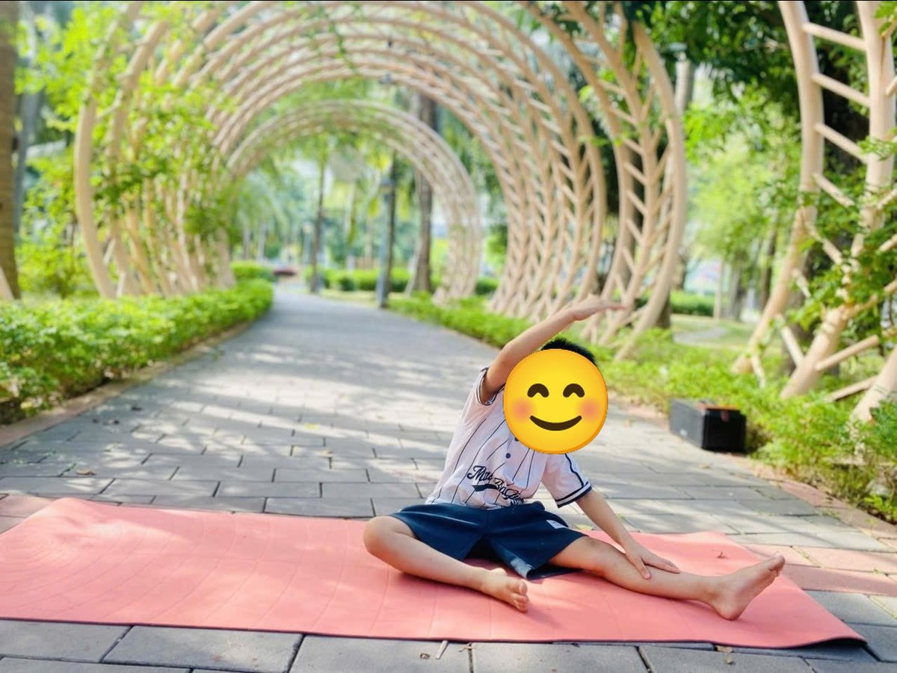

Chủ đề 9 · Ngày Quốc tế Phụ nữ 8/3
Bướm Xinh tìm quà cho bà
🌟 Bài học trong câu chuyện
Giới luật yoga: Santosha – Vui với những gì mình có. Bé biết hài lòng, mỉm cười với điều mình đang có.
Kỹ năng sống: Món quà từ trái tim, biết đủ.
1. Khởi động (2 phút)
Cả lớp ngồi xếp bằng thành vòng tròn. Cùng thở 3 hơi thở bông hoa: hít vào bằng mũi như ngửi hoa, thở ra bằng miệng thật chậm. Chắp tay trước ngực và chào nhau: “Namaste, chào các bạn!”
2. Câu chuyện: Bướm Xinh tìm quà cho bà (đọc cho bé nghe, 4 phút)
Cô đọc trọn câu chuyện cho bé nghe trước. Sau đó cô kể lại từng đoạn ngắn và cả lớp cùng tập 10 tư thế ở phần bên dưới.
Ngày 8 tháng 3 sắp đến. Bướm Xinh muốn tặng bà một món quà thật to, thật đắt. Bướm thấy một bông hoa nhỏ bên đường, nhưng lắc đầu: "Nhỏ quá, bà không thích đâu". Rồi Bướm vỗ cánh bay đi tìm khắp nơi.
Bướm gặp bạn Ong. Ong nói: "Quà quý nhất là quà từ trái tim mà". Bướm ngẫm nghĩ. Bướm nhớ những buổi tối bà ngồi kể chuyện cho mình nghe, nhớ mẹ như cái cây xanh che nắng cho mình mỗi ngày.
Bướm bay qua cánh đồng, hái một bó hoa dại nhỏ xinh đủ màu: vàng, tím, trắng. Chú chim Sơn Ca đậu trên cành hót: "Hoa dại cũng đẹp lắm, bạn ơi!"
Về nhà, Bướm thấy bà đang quét sân. Bướm cất bó hoa, lấy chổi quét giúp bà, quét bên trái, quét bên phải, sân sạch bong. Rồi Bướm mới tặng bà bó hoa nhỏ.
Mắt bà sáng lên như cầu vồng. Bà ôm Bướm thật chặt: "Bà thích món quà này nhất, vì cháu làm bằng cả trái tim". Bướm Xinh hiểu ra: món quà nhỏ, mình tự làm, cũng đã đủ làm bà hạnh phúc rồi.
3. Kể lại và tập 10 tư thế (6 phút)
-
 1
1Bông hoa
🧘 Tư thế Hoa sen (Lotus)
Lời kể khi tập: Bướm Xinh thấy bông hoa nhỏ bên đường, nhưng Bướm nghĩ: "Nhỏ quá, bà không thích đâu".
Cách làm: Ngồi xếp bằng, lưng thẳng, hai tay đặt trên gối, ngón cái chạm ngón trỏ như búp sen, thở thật chậm. Giữ 3 đến 5 nhịp thở.
-
 2
2Con bướm
🧘 Tư thế Con bướm (Butterfly)
Lời kể khi tập: Bướm bay đi tìm khắp nơi. Mình vỗ cánh bướm thật nhanh nào!
Cách làm: Ngồi, áp hai lòng bàn chân vào nhau, hai gối mở sang hai bên, tay dang như cánh hoặc nắm bàn chân, gối đập nhẹ như cánh bướm. Giữ 3 đến 5 nhịp thở.
-
 3
3Trái tim
🧘 Tư thế Lạc đà (Camel)
Lời kể khi tập: Bướm gặp bạn Ong: "Quà quý nhất là quà từ trái tim mà". Mình mở rộng ngực như trái tim.
Cách làm: Quỳ đứng, hai tay chống hông hoặc chạm gót chân như trong ảnh, nhẹ nhàng ưỡn ngực và nhìn lên trời. Giữ 3 đến 5 nhịp thở.
-
4
Bà ngồi kể chuyện
🧘 Tư thế Ngồi xếp bằng (Easy Pose)
Lời kể khi tập: Bướm nhớ bà hay ngồi kể chuyện cho mình nghe. Mình ngồi xếp bằng, thở chậm như nghe bà kể.
Cách làm: Ngồi xếp bằng, lưng thẳng, hai tay đặt nhẹ trên đầu gối. Giữ 3 đến 5 nhịp thở.
-
 5
5Mẹ là cây che bóng
🧘 Tư thế Cái cây (Tree)
Lời kể khi tập: Mẹ như cây xanh che nắng cho Bướm. Mình đứng một chân thật vững.
Cách làm: Đứng một chân, bàn chân kia đặt vào bắp chân hoặc đùi (không đặt lên đầu gối), hai tay chắp trên đầu. Giữ 3 đến 5 nhịp thở.
-
 6
6Bó hoa tặng cô
🧘 Tư thế Nữ thần (Goddess)
Lời kể khi tập: Bướm hái một bó hoa dại nhỏ xinh, đủ màu sắc.
Cách làm: Dang rộng hai chân, mũi chân hướng ra ngoài, gập gối, hai tay mở rộng hai bên. Giữ 3 đến 5 nhịp thở.
-
 7
7Chim hót
🧘 Tư thế Đại bàng (Eagle)
Lời kể khi tập: Chim Sơn Ca hót: "Hoa dại cũng đẹp lắm, bạn ơi!"
Cách làm: Đứng một chân, chân kia co lên, bàn chân móc nhẹ vào cổ chân trụ, hai tay dang rộng như đôi cánh đại bàng giữ thăng bằng. Giữ 3 đến 5 nhịp thở.
-

8Bé giúp bà quét nhà
🧘 Tư thế Cối xay gió (Windmill)
Lời kể khi tập: Về nhà, Bướm còn giúp bà quét sân. Mình cúi xuống, quét bên trái, quét bên phải.
Cách làm: Ngồi dang rộng chân, một tay vươn qua đầu nghiêng người sang bên như cánh quạt cối xay gió, rồi đổi bên. Giữ 3 đến 5 nhịp thở.
-
 9
9Cầu vồng
🧘 Tư thế Cây cầu (Bridge)
Lời kể khi tập: Bà nhận bó hoa nhỏ, mắt bà sáng như cầu vồng.
Cách làm: Nằm ngửa, co gối, bàn chân đặt trên sàn, nâng hông lên cao như cây cầu. Giữ 3 đến 5 nhịp thở.
-
 10
10Ôm bà thật chặt
🧘 Tư thế Ôm gối (Knees to Chest)
Lời kể khi tập: Bà ôm Bướm: "Bà thích món quà này nhất". Bướm vui vì những gì mình có đã đủ làm bà hạnh phúc.
Cách làm: Nằm ngửa, ôm hai gối vào ngực, lắc lư nhẹ sang hai bên. Giữ 3 đến 5 nhịp thở.
4. Thư giãn (2 phút)
Các con nằm ngửa, tay chân thả lỏng, nhắm mắt lại. Cô nói nhẹ: “Hít vào thật chậm… thở ra thật chậm… Con nhớ lại câu chuyện vừa rồi, nhớ người bạn mình thích nhất trong truyện. Cơ thể con mềm như bông, nhẹ như mây.” Sau đó các con nghiêng người, từ từ ngồi dậy.
5. Trò chuyện cùng bé (1 phút)
Bướm Xinh hiểu rằng món quà nhỏ từ trái tim đã là đủ. Biết hài lòng với điều mình có là Santosha.
Cô hỏi các con:
- Con có thể tặng bà, tặng mẹ món quà gì mà không cần mua?
- Con làm gì để giúp mẹ?
Kết thúc bằng lời chào “Namaste” và một nụ cười.
Lưu ý cho thầy cô và bố mẹ: Tập trên thảm, không tập ngay sau khi ăn no. Bé chỉ làm tới mức thấy dễ chịu, không ép bé. Tư thế đứng một chân có thể cho bé vịn tường hoặc vịn tay người lớn.